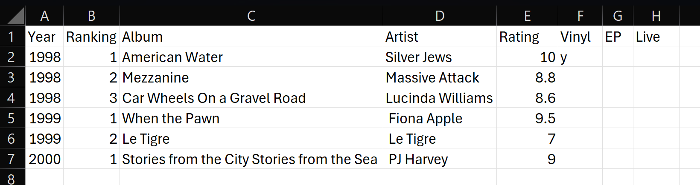

Preparing Your Data
Overview
My Favorite Albums uses a CSV to store album data. The file must follow a specific format for the application to read it correctly. An example is shown below. Note that the ranking represents the ranking against other albums in the same year.
Year,Ranking,Album,Artist,Rating,Vinyl,Ep,Live
1998,1,American Water,Silver Jews,10,y,,
1998,2,Mezzanine,Massive Attack,8.8,,,
1998,3,Car Wheels On a Gravel Road,Lucinda Williams,8.6,,,
1999,1,When the Pawn,Fiona Apple,9.5,,,
1999,2,Le Tigre,Le Tigre,7,,,
2000,1,Stories from the City Stories from the Sea,PJ Harvey,9,,,
Creating Your Own Data
- Open a spreadsheet application of your choice, for example Google Sheets or Microsoft Excel.
-
In the first row enter the column names in this order:
Year, Ranking, Album, Artist, Rating, Vinyl, Ep, Live. -
Add one row for each album you want to include. Enter the year,
ranking, album title, artist, and rating.
- If you are comfortable working with spreadsheets, you can leave the ranking column blank and have your software solve for the ranking from the rating
-
Sort your data first by Year and then by
Ranking. The example below shows how the data might
look in Excel.

Example of album data in Excel -
Export the spreadsheet as a CSV file named
album-rankings.csv.
Importing Your Data into My Favorite Albums
- Open the folder on your computer where you saved the My Favorite Albums application.
- Open the subfolder named
data. -
Replace the existing
album-rankings.csvfile with your created CSV file. Make sure the replacement file has the same name. - Run My Favorite Albums and check that your data appears correctly. For instructions, return to Setting Up My Favorite Albums .